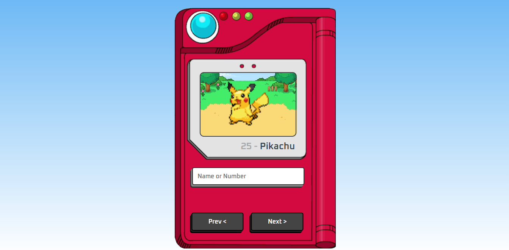

Como surgiu a internet?
A internet surgiu como resultado da colaboração entre cientistas e engenheiros, que desenvolveram redes de computadores interligadas. O protocolo TCP/IP desempenhou um papel fundamental na conexão global dos computadores, resultando na internet como a conhecemos hoje, uma rede global de comunicação e troca de informações.
Aplicativos
E-Commerce
Jokenpô
Pokédex
Portfolio